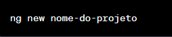
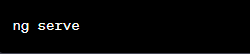

━━━━━━━━━━━━━━━━━━━━━━━━━━━━━━━━
[1] Introdução
[2] Versões
[3] Instalação
[4] Criando Projetos
[5] Executando Projetos
━━━━━━━━━━━━━━━━━━━━━━━━━━━━━━━━
O que é Angular
Angular é um framework de desenvolvimento de aplicativos web. Ele permite a criação de aplicativos web dinâmicos e
interativos com uma estrutura robusta e organizada. O Angular utiliza a linguagem TypeScript na codificação, proporcionando
tipagem estática e recursos avançados de orientação a objetos.
Angular permite que você construa interfaces de usuário utilizando HTML como base. O HTML é usado para definir a estrutura
do conteúdo da página, enquanto o Angular é utilizado para adicionar lógica dinâmica e interatividade a essa estrutura.
Versões
AngularJS
Lançado em 2010, o AngularJS foi a primeira versão do framework Angular. Ele introduziu o conceito de
"two-way data binding" (ligação de dados bidirecional) e extensões HTML para construir aplicativos web dinâmicos.
No entanto, o AngularJS não era tão escalável em termos de desempenho e complexidade de código.
Angular 2+
Angular 2 foi um redesenho completo do framework, lançado em 2016. Ele não era compatível com o AngularJS e trouxe
várias melhorias, incluindo uma arquitetura baseada em componentes, "one-way data binding" (ligação de dados unidirecional),
módulos, otimizações de desempenho e uma abordagem mais moderna em relação à web.
As versões subsequentes (Angular 4, 5, 6, 7, 8, 9) trouxeram melhorias incrementais, recursos adicionais e otimizações.
Angular 10+
A partir da versão 10, o Angular começou a seguir um cronograma de lançamento semestral mais previsível.
As atualizações nesse período focaram em melhorias de desempenho, estabilidade, correções de bugs e novos recursos menores.
Instalação
1) Pré-requisitos
Verifique se você já possui o Node.js e o npm(Node Package Manager) instalados em seu sistema. Você pode verificar isso digitando esses comandos no terminal:
Se esses comandos exibirem as versões do Node.js e do npm, tudo certo pra prosseguir.
2) Instalação
Execute o seguinte comando no terminal:
Aguarde até que a instalação seja concluída. Após a instalação, você pode verificar se o Angular CLI foi instalado executando
o seguinte comando:
Isso exibirá a versão do Angular CLI instalada, junto com outras informações adicionais.
Criando um Projeto
Com o Angular CLI instalado, você pode criar um projeto no Angular com o comando "ng new (nome_projeto)"

O Angular CLI pedirá algumas configurações, como adicionar roteamento ou qual estilo CSS você prefere. Configure o projeto de acordo com suas preferências.
Após a configuração, o Angular criará uma nova pasta com o nome do projeto. Você pode entrar nessa pasta usando o comando "cd (nome_projeto)"
Executando um Projeto
Dentro da pasta do projeto, execute esse comando para iniciar o servidor de desenvolvimento:

O servidor de desenvolvimento iniciará e você poderá acessar o aplicativo no navegador digitando "http://localhost:4200"